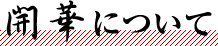
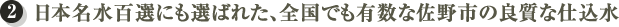
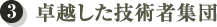
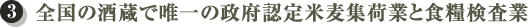

- HOME
- 開華について


延宝元年（１６７３年）創業の栃木県内で最も歴史のある酒蔵ですが、創業時から農家でもあります。農業と酒造りが一体となって始まりました。蔵元自社水田で、田植えから収穫まで全て社員が行っています。

きれいな川水の条件は、山の地層が古くよく洗いさらされ、あまり溶け出さず、その山に木がよく生えている、いわゆる水源のかん養ができていることです。関東平野の北端に位置し古生層から流れ出す佐野市の水は、日本名水百選にも選ばれたとび抜けてきれいな水です。

杜氏資格の国家検定制度「酒造一級技能士」５名。
栃木県で始まった「下野杜氏」（全十数名中）３名。
独立行政法人酒類総合研究所認定「清酒の官能評価分析における専門評価者」１名。
栃木県認定「とちぎマイスター」1名（酒類業界唯一）。
お米の公式等級検査「食糧検査技師」２名。
全国新酒鑑評会は、日本酒業最大規模の日本酒唯一の公式品評会です。明治４４年以来、世界に誇る日本酒醸造技術伝承の目的で主に国主催で行われてきました。
結果が確認できる昭和３１年以降で１７回。平成以降に限定しても１４回の金賞受賞（平成25年現在）。
これは栃木県内で最多金賞受賞です。
平成10年より北関東３県では初めて全商品が特定名称酒に移行しました。
日本酒全体の中で特定名称酒は約３０％ですが、開華では１００％です。
全商品が「開華」らしい華やかで繊細な香りとやわらかな旨みのある酒となっています。

全国の酒造では唯一の政府認定米麦集荷業者であり、近隣農家と直接契約してお米の集荷を行っています。数年前までは政府にしかできなかったお米の等級検査も自社で実施している全国で唯一の酒造です。
江戸時代初期の延宝元年（１６７３年）に創業の栃木県内最古の老舗蔵元です。
１６７３年は４代将軍徳川家綱の時代で江戸では呉服店「越後屋（三越の原点）」が開業。アメリカ独立宣言（１７７６年）までは１００年以上あります。
江戸時代、佐野のお酒は渡良瀬川から利根川への河川流通によって「地廻りもの」として江戸へ運ばれ、関東の酒処として栄えました。現在でも江戸東京博物館で当時の様子が見られます。
長年にわたってご愛飲いただいている地元の愛飲家の皆様が、どんな開華を呑んでも、美味しいお酒で楽しんでいただけるようにとの想いから、平成１０年より全商品を特定名称酒（吟醸酒、純米酒、本醸造など）と致しました。 香港向け輸出（平成５年）に始まり、現在では北米、欧州、香港、韓国、台湾、シンガポールなどの各国へ輸出されていますが、栃木県内への出荷が全出荷の約８割を占めています。